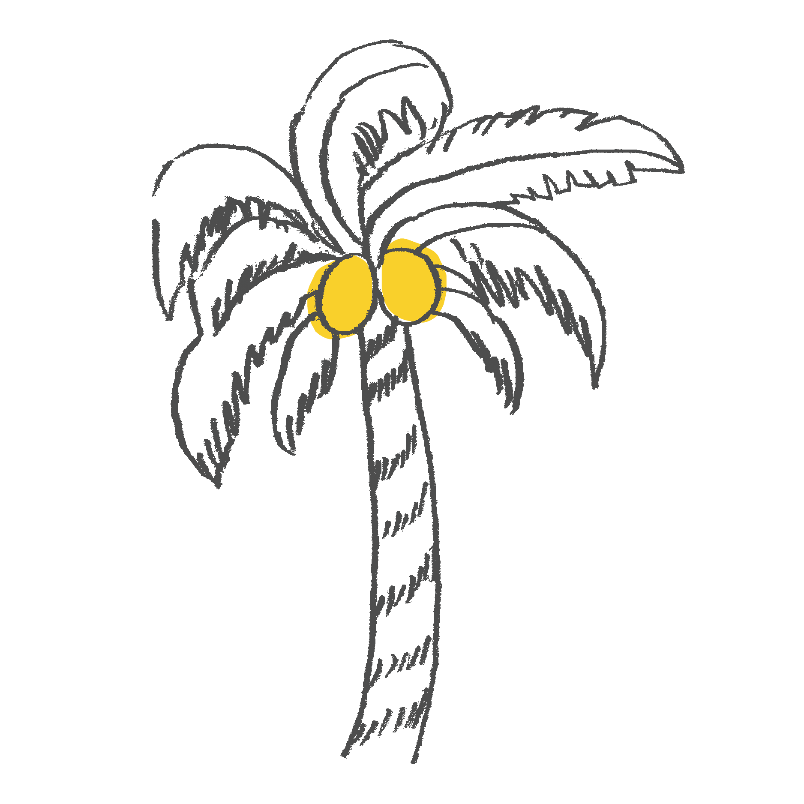

반갑습니다.
이다운 입니다.

MY INTRODUCTION
이름 : 이다운
1997 03 19
서울방송고등학교 졸업
" 생각하지 말고 JUST, DO IT "
변화를 두려워 하지 않음에 좋은 것을 잃을 수도 있지만 더 좋은 것을 얻을 수도 있습니다.
이런 것들을 다룰줄 알아요!


Project Overview
웹 표준 및 웹 접근성이 높은 웹사이트를 구현하는 것을 목표로 하며, 크로스브라우징을 하였습니다.
기본적인 폰트 사이즈는 다양하게 하지 않아 깔끔한 느낌을 주도록 하였고,
탭메뉴를 이용한 페이지 구성으로 이동하는 과정에서 번거로움이 없으며,
컬러 또한 근접색상을 사용하여 시선이 분산되지 않도록 정하였습니다.
3ce Re-Design
CloneCoding Web/Mobile.ver
BEFORE
선정 이유
웹 사이트의 구축의 중심인 Identity가 잘 보여지는 header부분의 포지션이 명확하지 않았고, navgation사용이 불편하여 접근성이 매우 떨어진다고 판단하여 새롭게 디자인하였습니다.
프로젝트 개요
웹 표준 및 웹 접근성 준수, 크로스브라우징 하여 화면 구현을 하였습니다. 이동성이 편리하도록 nav부분을 중심으로 두어 한층 단정하고 편리해진 느낌을 주었습니다.
AFTER
USE TO


제작 기간: 1.5 WEEK
참여도: 100%
페이지: 메인 / 로그인
사이즈:WEB: 1903px / MOBILE : 640px
작업 언어: html / css / javascript / jquery
code source: view
SulwhaSoo
CloneCoding Web/Mobile.ver
Original

선정 이유
'설화수' 네임을 들었을 때 처음으로 떠오르는 느낌에 맞게 홈페이지의 디자인과 컬러의 조합이 잘 이루어져있다고 생각했고, 안정감 있는 기본적인 구조로 짜여진 모습이 소비자들에게 불편하지 않게 다가 갈 수 있을 것 같아서 선정했습니다.
프로젝트 제작 후
느낀점
헤더 와 메인 슬라이드가 떨어져 있지 않아 고급스러움이 뭍어나있어 기술적으로 배울 수 있는 부분이 많았습니다. 플러그인 해오는 과정에서 많은 보수 작업이 있어 번거로움이 있었지만 반복적인 실행을 통해 이해도를 높이는 부분에서 이번 프로젝트를 작업하는 것에 높은 만족도를 얻을 수 있었습니다.
AFTER
USE TO
css/javascript/jquery

제작 기간: 2 WEEK
참여도: 100%
사이즈:WEB: 1903px / MOBILE : 640px
작업 언어: html / css / javascript / jquery
code source: view
Hokkaidi Microbiome
CloneCoding Only Web.ver
Original

선정 이유
저의 선정 기준의 우선시가 되는 부분은 디자인이 깔끔하고 복잡지 않은 navigaition의 연결성입니다. 그런 부분에 있어서 가장 처음으로 작업하게된 모방 홈페이지며, 단순하지만 모던한 느낌을 주는 css기능 기술 가능성이 높아보여 다소 심플한 홈페이지를 선택하게 되었습니다.
프로젝트 제작 후
느낀점
기본적인 틀을 단단하게 만들지 않으면 보수 작업이 번거롭고 많은 것을 수정해야 한다는 번거로움을 알게되었고, 단순해 보였지만 단순하지 않았고, 깔끔하게 보여지기 위해 구현하는 기술들이 더 예민하고 까다로울 수 있다는 것을 느꼈습니다.
AFTER
USE TO

PASADE PATTERN Benchmarking
CloneCoding Only Mobile.ver
Original


선정 이유
문화/생활 수준의 향상과 코로나의 영향으로 모바일 쇼핑의 사용이 급증한 가운데 소비 층이 높은 의류쇼핑몰을 선택하였으며, 화려한 디자인의 앱 보다는 쇼핑의 질을 높일 수 있는 디자인과 색감으로 한층 더 안정될 것이라 생각해서 이 사이트를 벤치마킹 하게 되었습니다.
프로젝트 제작 후
느낀점
팀 프로젝트로써 의견을 하나로 통일 시키는 과정에서 부딫히는 부분이 많았으나, 개개인의 작업이라는 생각을 버리고 모두의 작업이라는 마음을 가지고 부족한 부분이 있더라도 모두가 머리를 모아 진행하여 팀원들에게도 많이 배움을 얻어갔기에 만족스러운 결과가 나온 것 같습니다.
AFTER
USE TO

제작 기간: 3.2 WEEK
기여도: 25%
참여인원: 4명
사이즈:MOBILE : 430px
작업 언어: html / css / jquery / firebase
code source: view
구조 설계도
- 인트로 및 메인 화면
- 메뉴 리스트(outer)
- 상품 리스트
- 상품 디테일
- 수정
- 업로드
- 로그인
- 회원가입
Whatcha Benchmarking
React CloneCoding Only Web.ver
ORIGINAL

선정 이유
많은 ott중 하나로써 대중들이 많이 이용하고, 데이터를 끌고오기에 적합한 요소들을 가지고 있으며, 리액트로 도전해보기에 좋은 깔끔한 디자인을 가지고 있다고 생각하여 벤치마킹을 하게 되었습니다.
프로젝트 제작 후 느낀점
리액트의 개념을 잡고자 유트브 강의를 시청 클론코딩한 프로젝트 입니다. Netlify로 주소를 받아오는 작업에서 오류가 있어 주소는 끌고 오지 못했지만, 오픈 API로 필요한 데이터를 연결해서 가져오는 과정들이 프론트와 백앤드 직무의 명확한 개념을 잡는 시간들이었고, API로 받아오는 데이터들이 화면에 보여지는 과정이 신기했고 재미가 있었습니다. 앞으로도 리액트에 대한 깊이있는 개발을 이어가고 싶은 욕심이 생기는 작업이였습니다.
AFTER
USE TO

제작 기간: 1 day
기여도: 100%
사이즈:WEB : 1902px
작업 언어: html / css / react
code source: view